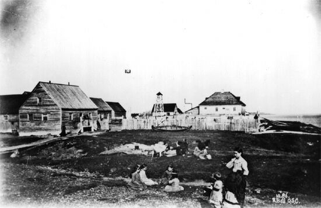
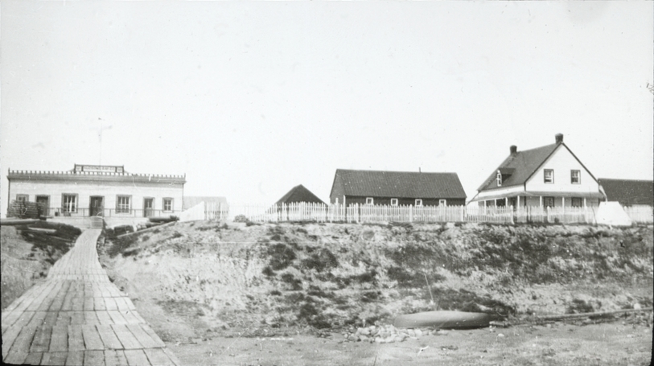
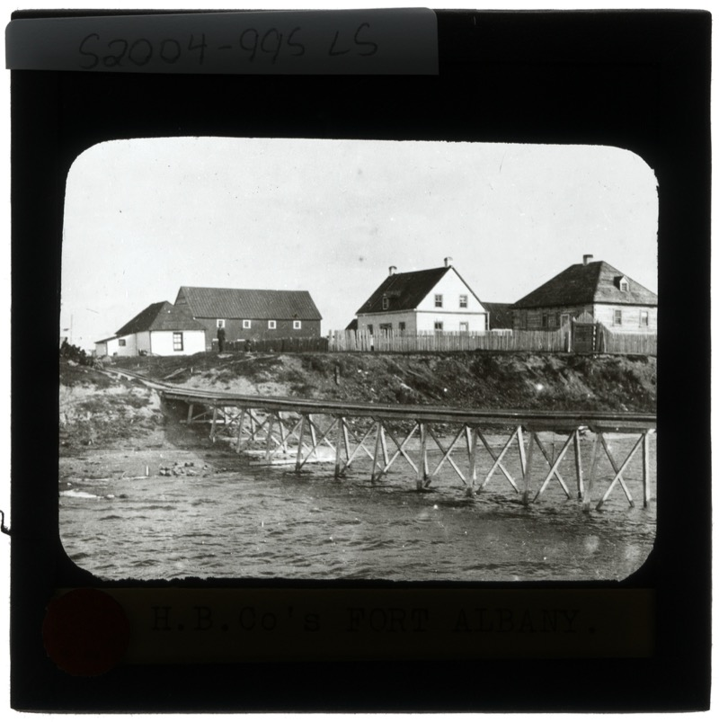

Kashechewan First Nation is a Cree community in the James Bay lowlands of Northern Ontario. We sit on the northern shore of the Albany River, near where it meets the west coast of James Bay — one of the most remote inhabited regions of the province.1
Our name
Community members chose the Swampy Cree name Kishechiwan (kišîciwan), meaning “where the water flows fast,” for the swift current of the Albany River. When the sign for the community's new post office arrived, it carried the misspelling “Kashechewan.” That spelling became the official name of the community — a name that, as spelled, has no meaning in the Cree language.2
Our history
Kashechewan came into being when most of the Anglican families of the Fort Albany First Nation moved north across the Albany River between 1958 and 1961. In 1977, the community was granted its own band council under the Indian Act. To this day, Kashechewan and Fort Albany First Nation continue to share a single reserve, Fort Albany 67.1
A shared reserve. Because Kashechewan and Fort Albany share the Fort Albany 67 reserve, their populations are often reported together in federal records — a total of 5,597 as of October 2024. Kashechewan's own population was estimated at about 2,000 in 2024.1
The land & the river
Kashechewan lies on the flood plain of the Albany River. The closest urban centre is Timmins, Ontario, about 400 kilometres to the south. The community is reached year-round by air and, in winter, by a seasonal ice road that connects Kashechewan to Attawapiskat, Fort Albany, and Moosonee along the James Bay coast.1
Life on the flood plain shapes everything here. Each spring, as the ice on the Albany River breaks up, rising water and ice jams threaten the community — a reality that has led to repeated evacuations and, today, a shared commitment to relocate to higher ground.1 You can read more about that work on our Community Services page.
A brief timeline
Treaty No. 9 (the James Bay Treaty) is signed, covering the territory of the Omushkego Cree along the Albany River and James Bay.3
Most Anglican families of Fort Albany First Nation move north across the Albany River, forming the community that becomes Kashechewan.1
Kashechewan is granted its own band council under the Indian Act, while continuing to share the Fort Albany 67 reserve.1
A drinking-water crisis and flooding lead to two major evacuations, bringing national attention to conditions in the community.1
A new 24-classroom school opens, built on pilings for a future move to higher ground; a Framework Agreement on relocation is signed.4
Indigenous Services Canada approves about $8.4 million for detailed planning studies toward relocating the community to higher ground.5
History in photographs
Kashechewan and Fort Albany First Nation were one community until families split across the river in 1958–1961, and they still share the Fort Albany 67 reserve today. These historical images, from before and around that split, show the shared Hudson's Bay Company post the community grew from.



Sources & citations
- “Kashechewan First Nation.” Wikipedia. en.wikipedia.org/wiki/Kashechewan_First_Nation
- Name origin (Kishechiwan / “where the water flows fast”) and post-office misspelling: “Kashechewan First Nation.” Wikipedia and Kashechewan First Nation facts for kids, Kiddle. kids.kiddle.co/Kashechewan_First_Nation
- “Treaty 9 First Nations.” Queen's University Library Research Guides. guides.library.queensu.ca/treaty-9/first-nations
- School opening and relocation framework: “Question Period Note: Kashechewan.” Government of Canada — Indigenous Services Canada, Open Government Portal. search.open.canada.ca
- “Kashechewan Deserves Better.” Indigenous Watchdog, and Government of Canada relocation planning funding (December 2025). indigenouswatchdog.org